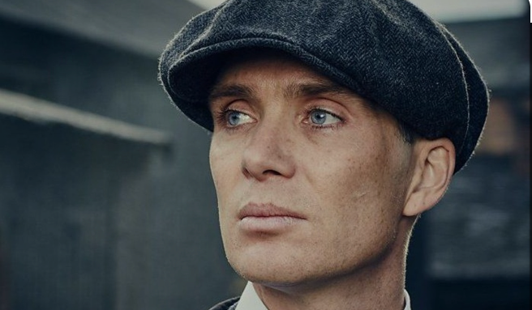
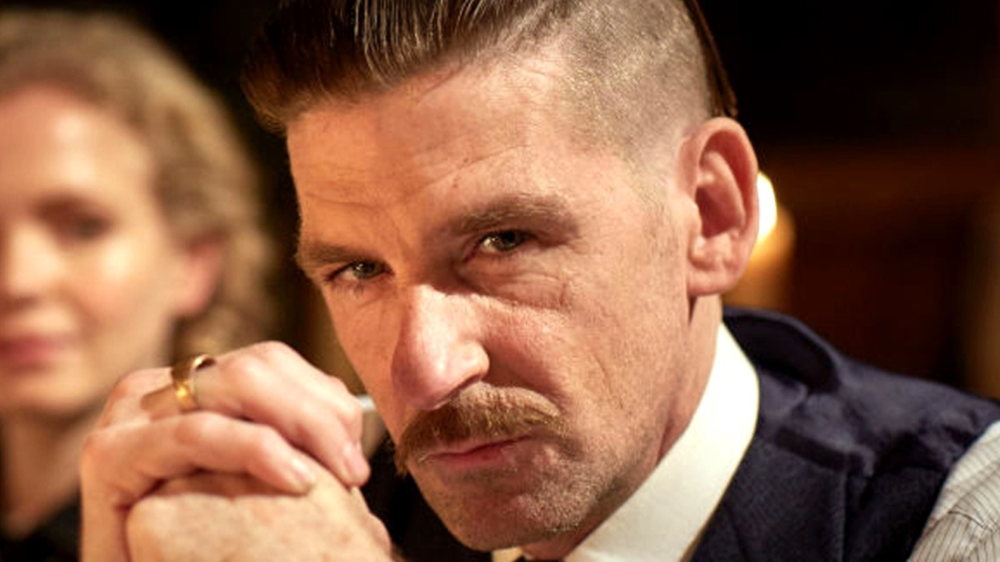
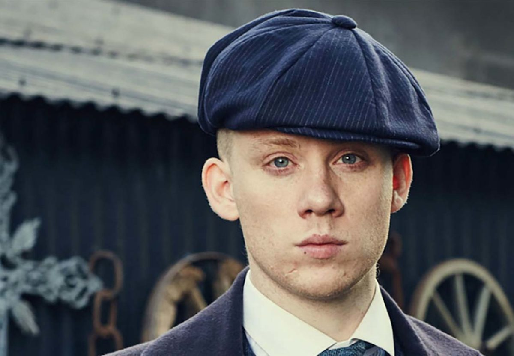
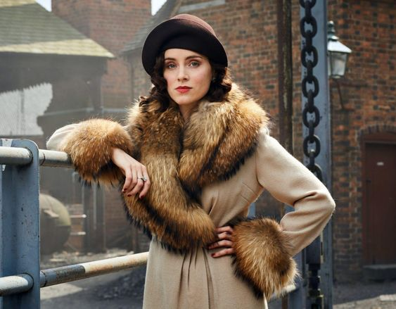
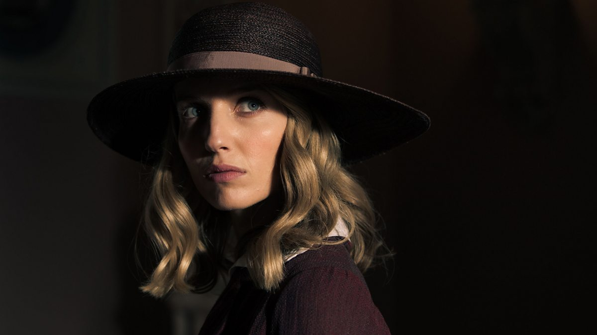
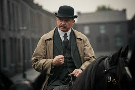

Mi Serie
Descripción de Peaky Blinders
Peaky Blinders es una serie de drama criminal ambientada en la ciudad de Birmingham, Inglaterra, después de la Primera Guerra Mundial. La serie sigue a la familia Shelby, una poderosa familia de gánsteres liderada por Thomas Shelby, quien busca expandir su imperio criminal mientras enfrenta amenazas de enemigos externos e internos.
Los Peaky Blinders, conocidos por llevar cuchillas de afeitar cosidas en las viseras de sus gorras, operan en un mundo lleno de violencia, corrupción y ambición desmedida. La serie destaca por su narrativa intensa, personajes complejos y una estética oscura y estilizada que refleja el duro entorno industrial de la época.
Reparto
Thomas Shelby (Cillian Murphy)
El líder de la familia Shelby y el principal protagonista de la serie. Thomas es un astuto y ambicioso gangster que dirige la banda Peaky Blinders.
Arthur Shelby (Paul Anderson)
El hermano mayor de Thomas, conocido por su temperamento violento y lealtad a la familia.
John Shelby (Joe Cole)
Otro hermano de Thomas y Arthur, conocido por su participación en los negocios de la familia.
Ada Shelby (Sophie Rundle)
La hermana menor de Thomas y Arthur, que tiene un papel crucial en la serie a medida que la historia avanza.
Polly Gray (Helen McCrory)

Tía de Thomas y matriarca de la familia Shelby, quien también actúa como la contable principal de la banda.
Grace Burgess (Annabelle Wallis)
Una espía que se infiltra en la banda de los Shelby, pero que eventualmente se convierte en el interés amoroso de Thomas.
Inspector Chester Campbell (Sam Neill)
Un inspector de policía enviado desde Belfast para erradicar el crimen en Birmingham y que se convierte en el principal antagonista de la primera temporada.
Billy Kimber

Líder de una banda rival que controla las carreras de caballos en Birmingham. Es un antagonista de la primera temporada, conocido por su naturaleza violenta y despiadada.